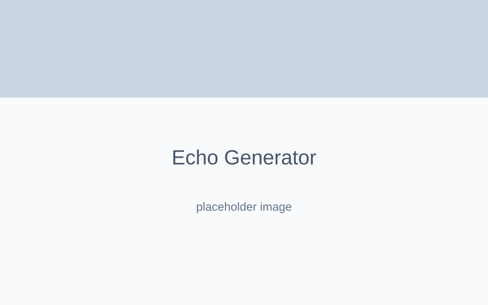

BK Echo
Aplicação focada em processamento de arquivos de áudio via inteligência artificial e devoluções contextuais precisas.
Contexto & Problema
O processo manual de escutar longas gravações de áudio (reuniões, aulas, entrevistas) e convertê-las em documentos bem estruturados ou resumos pontuais toma horas de trabalho de um analista.
Objetivo
Prototipar e entregar uma aplicação (Next.js) que absorve mídias de áudio, processa a transcrição e consome a OpenAI para retornar artefatos prontos (Resumo Executivo, Ata de Reunião, Highlights) em segundos.
Arquitetura & Tecnologias
- Server Components (Next.js): Adoção do App Router para manipular a ponte de dados e o streamming de IA sem repassar tokens ou lógicas sensíveis ao navegador.
- OpenAI Whisper: Pipeline de transformação de voz para texto (Speech-to-Text).
- OpenAI GPT (Comandos Estruturados): Modelagem de *System Prompts* para forçar a API a devolver respostas em JSON validado, impedindo halucinações de formato.
Decisões Técnicas & Desafios
Lidar com arquivos em Next.js exige controle estrito do Edge/Node Runtime. O upload de áudios pode facilmente estourar os limites de payload da Vercel (4.5MB). Foi desenhada uma arquitetura via pre-signed URLs (upload direto para o Supabase Storage), onde o frontend avisa o backend do upload concluído, que então consome o bucket diretamente para rodar a inferência da OpenAI.
Galeria & Mockups

Conclusão
BK Echo provou que a inteligência artificial generativa, quando encapsulada em uma UI focada em engenharia e utilidade ao invés de "chatbots conversacionais", gera um salto absurdo em utilidade prática.